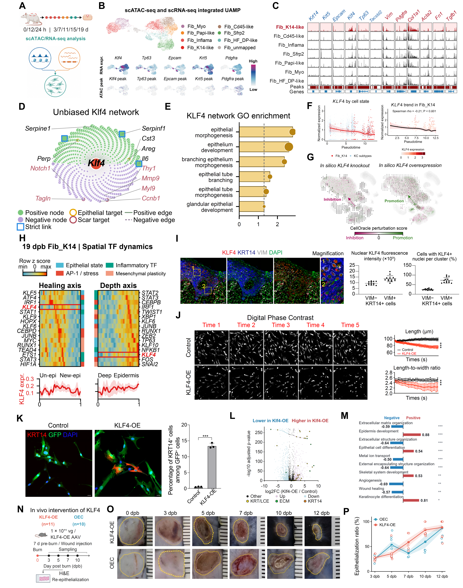

RNA/chromatin integration, candidate networks, CellOracle predictions, KLF4 perturbation and wound histology.
Executed supporting analyses and/or archived sources; see panel-specific status
Source data · Panel manifest · Execution report

| Panel | Description | Status |
|---|---|---|
| 4A | (A) Rat burn time course for scRNA-seq and scATAC-seq, spanning 0, 12, and 24 h and 3, 7, 11, 15, and 19 days. | partial |
| 4B | (B) Joint transcriptomic/chromatin embedding with fibroblast-state labels and RNA-expression or ATAC-peak feature maps for Klf4, Tp63, Epcam, Krt5, and Pdgfra. | partial |
| 4C | (C) Chromatin-accessibility tracks at the indicated epithelial and stromal loci across annotated fibroblast states. | partial |
| 4D | (D) Inferred Klf4-centered network. Green and purple encode positive and negative nodes; solid and dashed edges encode the displayed positive and negative relationships. Outlines identify epithelial targets, scar-associated targets, and strict links. | partial |
| 4E | (E) GO enrichment of the KLF4-associated network for epithelial morphogenesis and related developmental processes. | partial |
| 4F | (F) KLF4 expression along the displayed pseudotime trajectory, colored by cell state or expression. Within Fib_K14, the plotted Spearman correlation is rho = −0.21, P < 0.001. | partial |
| 4G | (G) CellOracle simulations of KLF4 knockout and overexpression, showing predicted perturbation vectors and scores. Magenta and green indicate the displayed inhibition and promotion scores, respectively. | partial |
| 4H | (H) Spatial transcription-factor expression profiles within the Fib_K14 analysis at 19 dpb, organized along healing and depth axes. Heatmaps show row z scores; lower plots show KLF4 expression profiles. | partial |
| 4I | (I) Tissue imaging of KLF4 (red), KRT14 (blue), VIM (gray), and DAPI (green), with nuclear KLF4 intensity and KLF4-positive nuclear fractions compared between VIM-negative/KRT14-positive and VIM-positive/KRT14-positive profiles. | partial |
| 4J | (J) Digital phase-contrast images and morphometric measurements of control and KLF4-overexpressing cultures. Graphs report cell length in μm and length-to-width ratio over the displayed acquisition sequence. | partial |
| 4K | (K) KRT14 (red), GFP (green), and DAPI (blue) imaging in control and KLF4-overexpressing cultures, with the KRT14-positive fraction among GFP-positive cells. | partial |
| 4L | (L) Bulk RNA-seq volcano plot comparing KLF4 overexpression with control. Axes show log2 fold change and −log10 adjusted P value; selected keratin/late cornified-envelope, matrix-associated, and KRT14 genes are highlighted. | partial |
| 4M | (M) Signed pathway scores for the KLF4-overexpression comparison, including epithelial-development, keratinocyte-differentiation, and extracellular-matrix-associated programs. | partial |
| 4N | (N) In vivo KLF4-overexpression design. The schematic lists KLF4-OE n = 11 and overexpression control (OEC) n = 10, with local administration of 1 × 10^11 vector genomes per wound 7 days before burn induction. | partial |
| 4O | (O) Representative wound images from KLF4-OE and OEC groups at 0, 3, 5, 7, 10, and 12 dpb. Dashed outlines mark the displayed wound region. | partial |
| 4P | (P) H&E re-epithelialization in the current KLF4 collection, defined as epithelialized length/original wound length × 100. Open circles, individual sections; solid points/lines, means; shading, mean ± SEM. Treatment/control section counts are 6/5, 8/7, 5/4, 7/5, and 9/8 at 3, 5, 7, 10, and 12 dpb. Exploratory two-sided Welch tests with Holm adjustment over five time points yield no adjusted P < 0.05. Representative H&E is in Figure S7A. | partial |